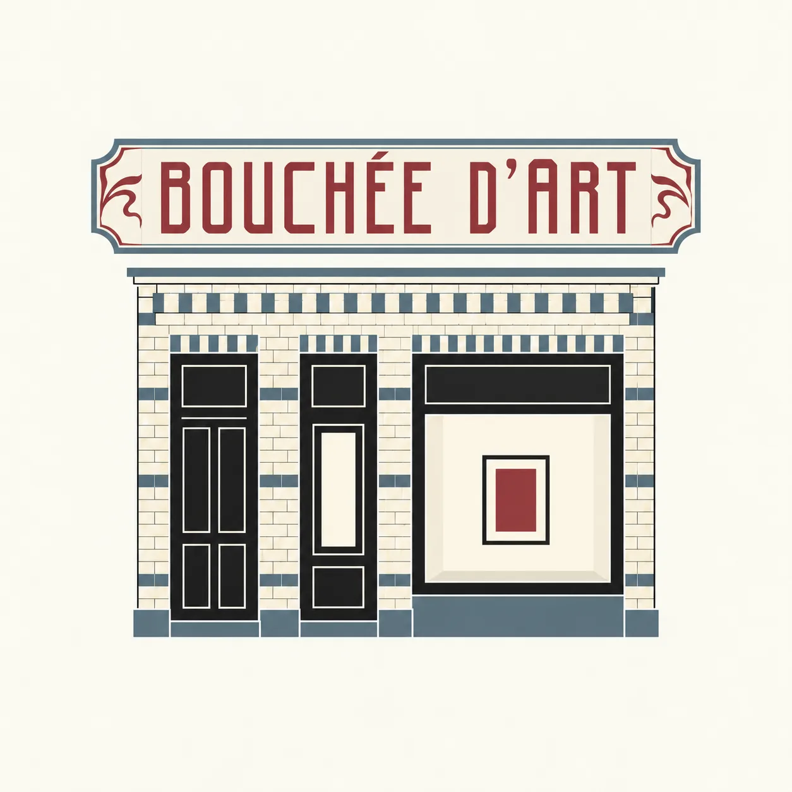
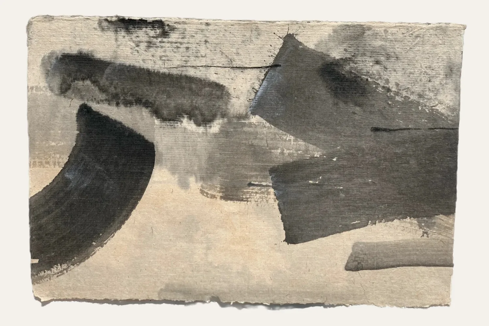
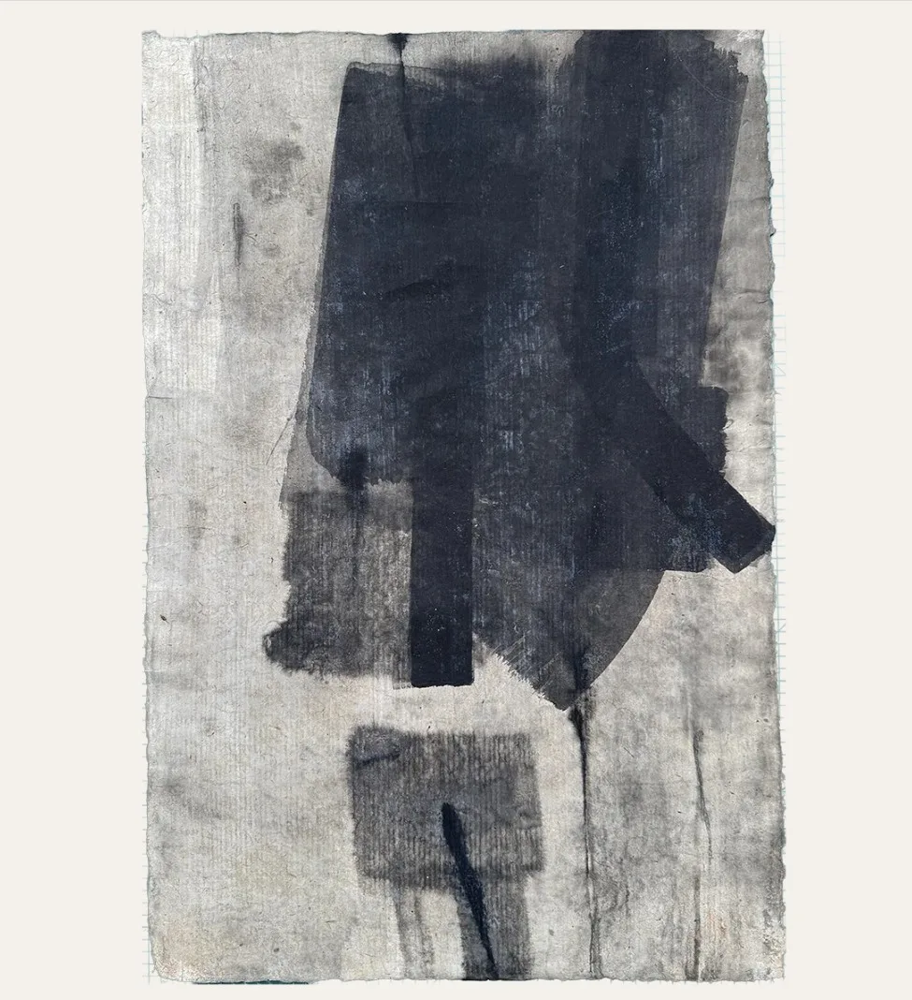
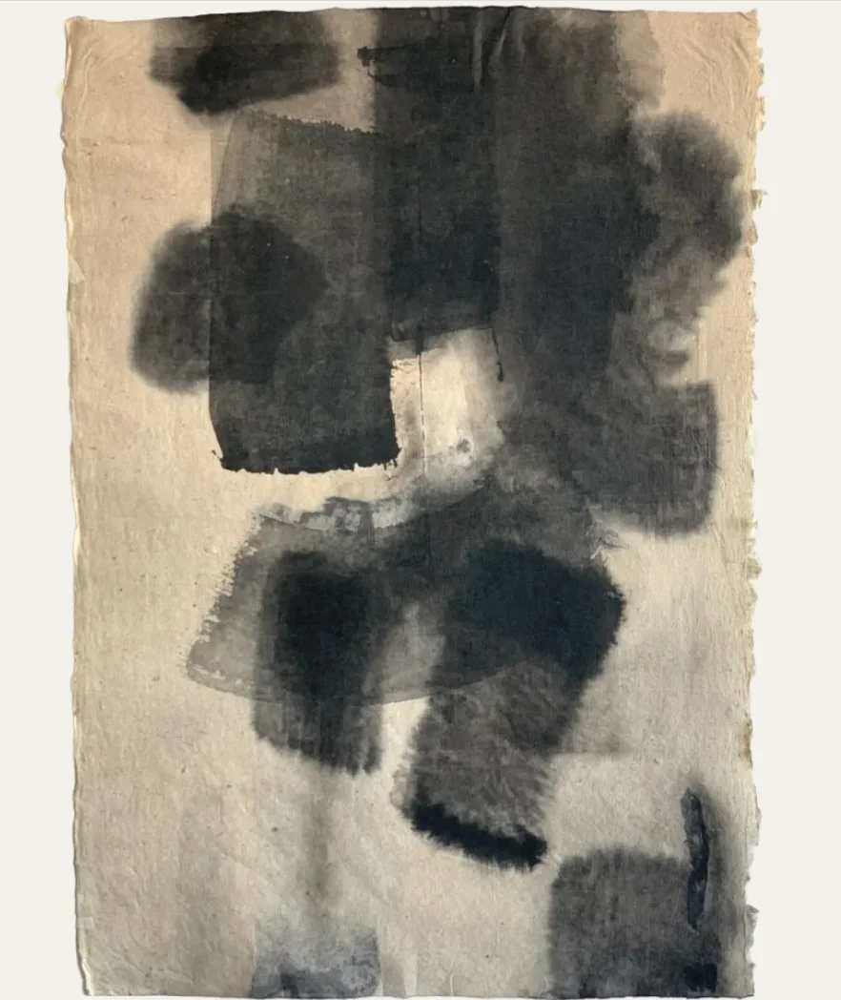
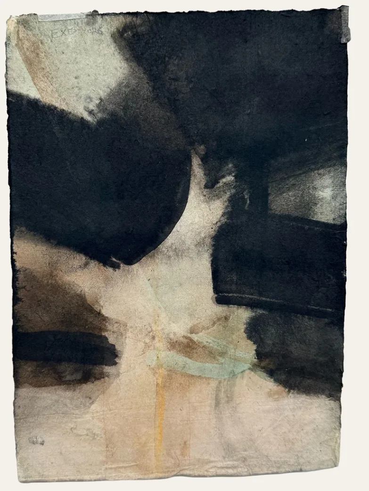
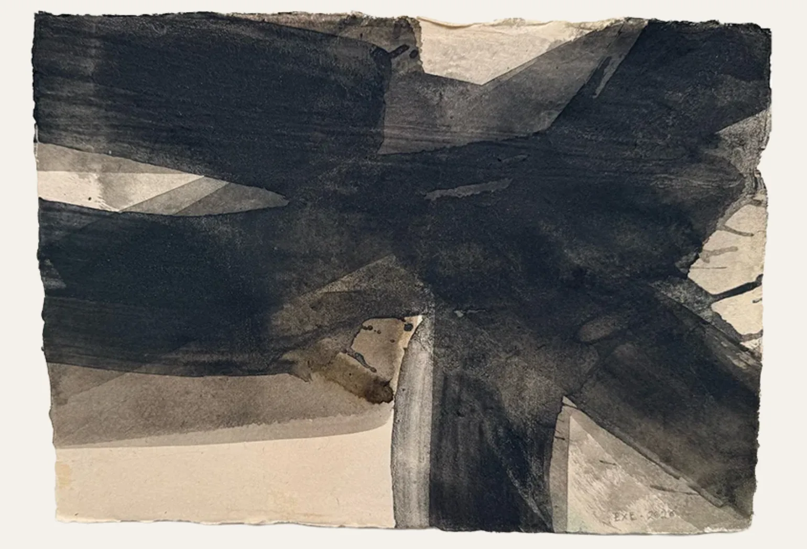
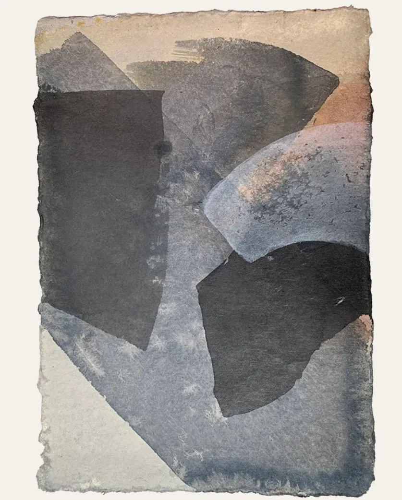
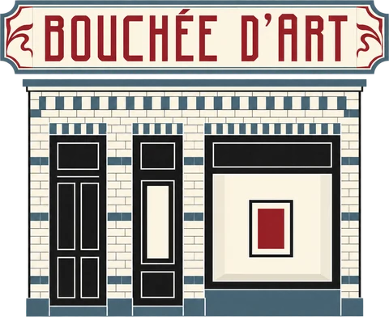

Kunstcentrum in Oostende
Bouchée d’Art
Over het kunstcentrum
Bouchée d’Art is een kunstcentrum in Oostende, gevestigd in de Sint Fransiscusstraat 4. Ontdek tentoonstellingen met schilderijen en sculpturen en de deelnemende kunstenaars.

Nu te zien
Swimming in my head
23 oktober 2026 — 15 november 2026
De tentoonstelling bevat werken uit beide reeksen, 'Swimming in my head' en 'The road not taken'.
23 oktober 2026 — 15 november 2026.
Vrijdag, zaterdag en zondag, van 14 tot 18uur.
De tentoonstelling bevat werken uit beide reeksen, 'Swimming in my head' en 'The road not taken'.
Vernissage op vrijdag 23 oktober.
Open vanaf 14uur, vernissage van 17 tot 20uur.






Kunstenaar
An Van Exe
Bezoek ons
Adres
Sint Fransiscusstraat 4
8400 Oostende
Openingsuren
23 oktober 2026 - 15 november 2026.
Vrijdag, zaterdag en zondag, van 14 tot 18uur.
https://www.anvanexe.com/werk
